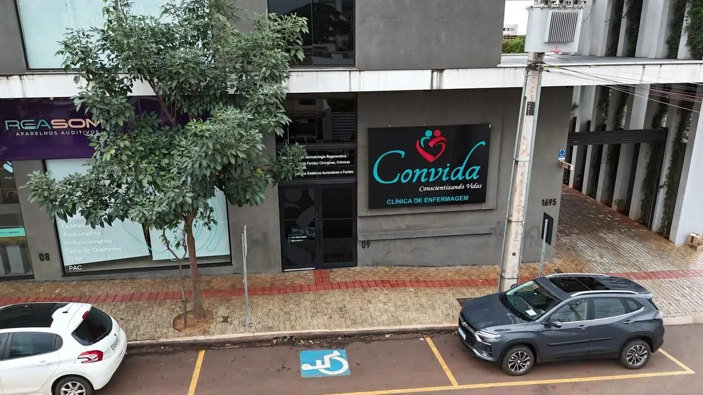
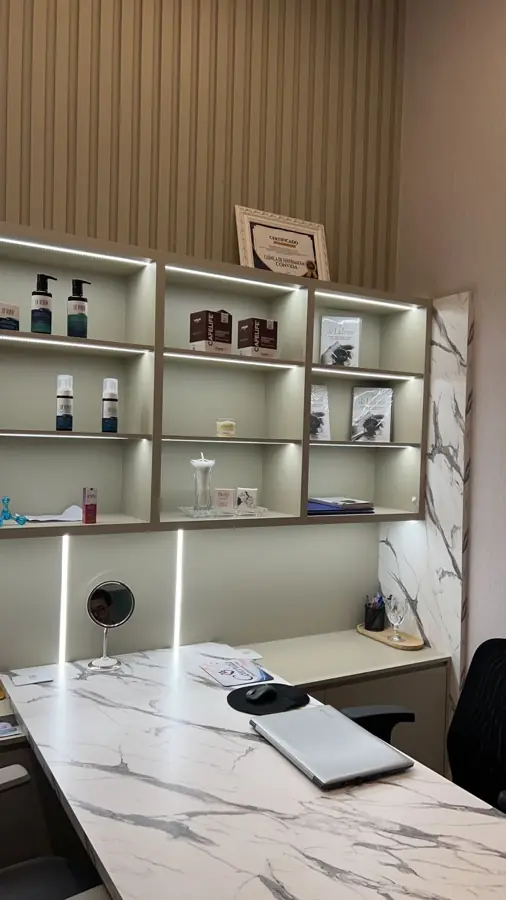
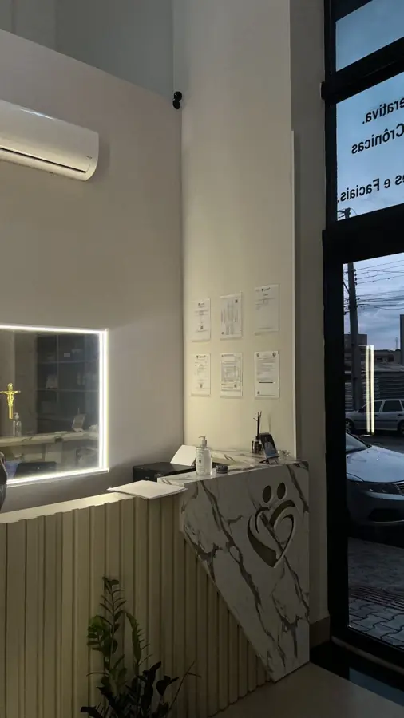
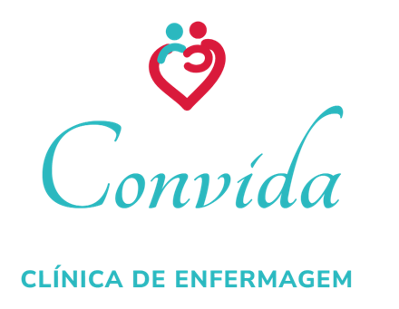

Tratamento de feridas em Campo Mourão com cuidado especializado
Ferida que não cicatriza merece atenção. Na ConVida, cada pessoa passa por uma consulta de enfermagem e recebe um plano de cuidado individual.
Agendar avaliação pelo WhatsApp
Feridas que pedem mais do que um curativo comum
Atendemos pessoas com feridas de difícil cicatrização e orientamos também a família, que cuida no dia a dia.
Pé diabético
Feridas nos pés de quem tem diabetes, que costumam cicatrizar mais devagar.
Úlceras nas pernas
Úlceras venosas, arteriais ou mistas, ligadas a problemas de circulação.
Lesão por pressão
Escaras em pessoas acamadas ou com pouca mobilidade.
Feridas cirúrgicas e queimaduras
Pontos que abriram, feridas infectadas e queimaduras.
Recursos de enfermagem para apoiar a cicatrização
Cada recurso é indicado depois da consulta de enfermagem, de acordo com o caso de cada pessoa.
- Curativos avançados e coberturasControlam a secreção e protegem a ferida, com menos trocas.
- Laserterapia (fotobiomodulação)Laser de baixa potência que estimula a regeneração do tecido.
- Ozonioterapia e bag de ozônioTerapia complementar com ação antimicrobiana e anti-inflamatória.
- PRP (plasma rico em plaquetas)Preparado com o sangue do próprio paciente.
- Curativo a vácuoTerapia por pressão negativa para feridas selecionadas.
- DesbridamentoRemoção do tecido sem vida para preparar a ferida.
- Terapia compressivaPara úlceras de perna, com diagnóstico vascular.
- Matriz regenerativa de colágenoEnxerto biológico que serve de suporte ao novo tecido.
A ozonioterapia é um procedimento complementar (Lei 14.648/2023). O uso de PRP pela enfermagem segue a Resolução COFEN 788/2025. Resultados variam de pessoa para pessoa.
Técnica, acolhimento e acompanhamento de perto
A ConVida é coordenada pela enfermeira Mirian Aparecida de Oliveira de Souza, com mais de 26 anos na área da saúde. O atendimento é feito com protocolo, registro da evolução e orientação clara para o paciente e a família.
"Clínica extremamente aconchegante e bem localizada, profissionais atenciosos e capacitados. Indico!"Millena M. · avaliação no Google ★★★★★
"Excelente profissional na área de tratamento de feridas, recomendo."Antonio A. · avaliação no Google ★★★★★


Três passos para começar o cuidado
Chame no WhatsApp
Conte rapidamente o que está acontecendo e escolha o melhor horário.
Consulta de enfermagem
Avaliação presencial da ferida e da saúde como um todo, na Sala 09.
Plano e acompanhamento
Plano de cuidado individual, com retornos para acompanhar a evolução.
Perguntas que recebemos sempre
Quando devo procurar atendimento para uma ferida?
Se a ferida não melhora depois de algumas semanas, aumenta, tem secreção, mau cheiro, vermelhidão ou dor que piora, ou se você tem diabetes ou problemas de circulação, procure avaliação o quanto antes.
Posso mandar foto da ferida pelo WhatsApp para saber o tratamento?
O WhatsApp serve para agendar e tirar dúvidas gerais. A avaliação e a definição do tratamento são feitas presencialmente, na consulta de enfermagem.
Quanto tempo leva o tratamento?
Depende da causa da ferida, do tamanho e da saúde de cada pessoa. O plano e a frequência dos retornos são definidos na consulta e ajustados conforme a evolução.
Atendem convênio ou SUS?
As formas de atendimento e pagamento são informadas pelo WhatsApp. Chame que explicamos tudo.
Onde fica a clínica?
Na Av. Manoel Mendes de Camargo, 2331, Sala 09 (Fourth Medical Center), Centro, Campo Mourão-PR. Há vaga para pessoas com deficiência em frente.
Um familiar pode acompanhar?
Sim. A família é bem-vinda e recebe orientação para continuar o cuidado em casa.

Agende sua avaliação na ConVida
Atendimento de segunda a sexta, das 8h às 17h, no Centro de Campo Mourão.
Agendar avaliação pelo WhatsAppEndereço
Av. Manoel Mendes de Camargo, 2331, Sala 09
Fourth Medical Center · Centro · Campo Mourão-PR · 87303-115
WhatsApp
(44) 99810-0888
Instagram
@convida.cv